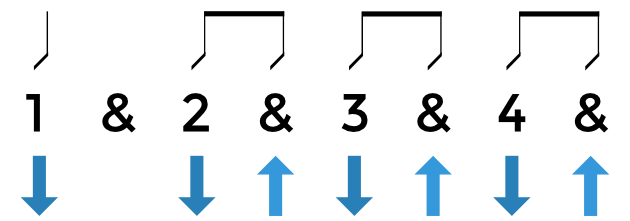

Strumming Patterns
Strumming patterns are vital if you want to have variety in your guitar playing. If all songs only included a down strum on their songs, you might probably find that it'd get boring quick.
Above is an example of a strumming pattern. The numbers represent the beats and the arrows below tell you whether or not you should strum down or up.
Heres a song that uses this strum pattern. Can you hear it?
Practice, Practice, Practice
Strumming patterns can be very difficult when you start learning guitar. The trick is to focus on the rhythm of the song you're playing and try synchronizing your strum movements with it.
Listen to your favorite guitar songs and see if you can pick out the strum pattern.
Here's a video of one of our employees playing the strumming technique as shown above.